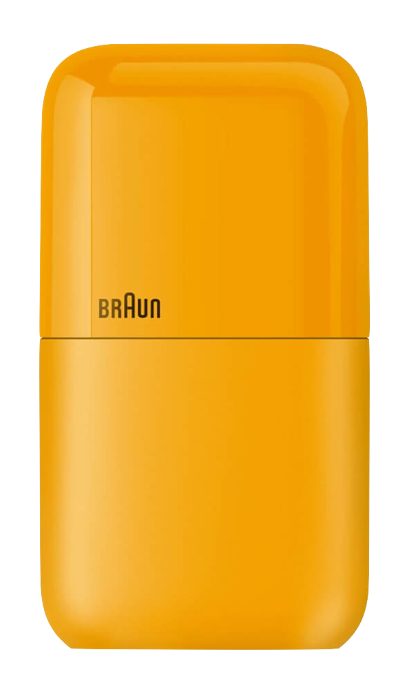

Braun Products You Can Buy Today
10/06/2024
Braun's challenge in finding its identity in today's markets is difficult and complicated. This is due in part to Dieter Rams' departure from Braun in 1997, and its individual divisions having been under changing ownership. Despite this, Braun has made encouraging strides under its current design lead, Oliver Grabes, including the revival of its audio category. And several products remain in their catalog which markedly reflect the timeless aesthetic of classic designs from Dieter Rams and his talented team.
 Braun - Pocket Shaver (2021)
The latest among them is the Pocket Shaver Mini, exhibiting subtle innovation within their strongest category, while furthering the minimalist aesthetic of familiar products from Braun's past (including a specific throwback with this familiar orangey yellow hue).
At the time of writing, it can be purchased exclusively from Amazon Japan, and can ship outside of Japan to select countries (USA included).
Braun - BNE001BK Calculator (2013)
The BNE001BK calculator, a mostly-faithful reissue of the 1987 ET66 calculator, is a straightforward and honest tribute featuring one of Rams' meticulously curated color palettes. It is mostly faithful to the original.
At the time of writing, it can be purchased exclusively from Amazon Germany in limited capacity from sellers wiling to ship to your country (currently there is a reasonable offering that ships to the USA). It was only recently discontinued from from Braun's Amazon storefronts in other countries.
The BC05W Travel Alarm Clock is a simple, compact analog clock. What sets it apart from their other stationary clocks, is its inclusion of the vintage red, green, and orange color accents across the clock face and buttons, as well as its slotted speaker holes. This latter detail, though subtle, is a classic design element otherwise absent from Braun's product catalog today.
At the time of writing, it is available from both braun-clocks.com and Amazon USA. Braun also continues to sell other stationary clocks, wall clocks, and watches, many of which carry forward other classic designs from Dieter Rams, Dietrich Lubs, and others.